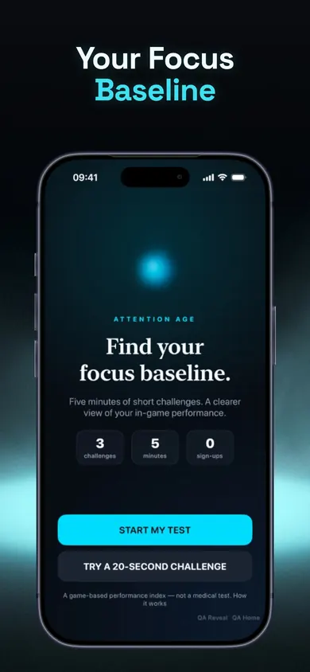

FREE VISUAL SEARCH GAME · UNTIL YOU CHECK
Two passes.
Same target.
What changed?
Find every blue triangle on Board A. Check your choices, then repeat on Board B. Both boards contain five targets; only the arrangement changes.
Start Board ANo timer, account, ranking or attention score. Work stays in this tab and clears on reload.
Select only the blue triangles. Every cell also has a written label for people who do not use color or shape alone.
TWO ATTEMPTS, ONE SMALL OBSERVATION
Compare what happened. Do not turn it into a diagnosis.
Board B
What changed?
A different arrangement can change which items stand out. One pair of boards cannot estimate attention span, intelligence, age, health or everyday performance. It is simply a repeatable practice activity.
HOW TO READ THE RESULT
Separate misses from extra selections.
A miss and an extra are different decisions
A miss is a blue triangle you left unselected. An extra is a different cell you selected. The checker marks both so you can review the exact decision instead of seeing one unexplained score.
Why there is no countdown
This activity is designed for deliberate comparison, not speed. You can pause, use a keyboard, zoom the page or read the labels. Those choices make the result less useful as a standardized measure—and more usable as an ordinary practice game.
Try a fairer comparison
If you repeat the game later, keep your screen size and interruption level similar. Still, a better second pass may reflect familiarity with the rule or layout. It is not proof of a broader change.
Attention Age: Focus Test
Published by Honest Little Apps
Want short focus tasks with a clear finish?
Attention Age is a separate iPhone app with its own game-based focus activities. Its in-app results describe performance on those tasks; this browser game does not import app data or generate the app's index.
View Attention Age on the App StoreFree download with optional in-app subscriptions. Check the current local offer before purchasing. This page is an owned companion, not an independent review.
